I am a current student at the University of the West of England studying for a MSc in Data Science and due to finish in January 2024.
I am a current student at the University of the West of England studying for a MSc in Data Science and due to finish in January 2024.
My projects I have been working on…
The full report, code and data can be found on GitHub:
This project demonstrates my skills using Python to build statistical models, machine learning models and deep learning models for multivariate time series forecasting and compare them using performance metrics and data visualisations.
Abstract
Power outputs from solar panels or photovoltaic (PV) cells have previously been forecasted using weather data and data from large-scale photovoltaic plants. These models are primarily used for short-term forecasting ranging from a few minutes to a few days into the future. This project analyses the effects of weather features on power output and compares three different types of models: SARIMAX, XGBoost and LSTM-RNN, developed using UK weather data and power output data from a UK residential photovoltaic system. The models are used for longer-term forecasting of one-year of power outputs and compared using plots, RMSE, MAE and R2 . All weather features in the data were found to have significant correlations to the power outputs. The best performing model overall was the LSTM-RNN from the RMSE and MAE.
The aim of this project was to build and evaluate commonly used PV power output forecasting techniques and suggest a model for multivariate, long-term forecasting of a UK residential PV system power output.
The technical process followed during this project is outlined in Figure 1.
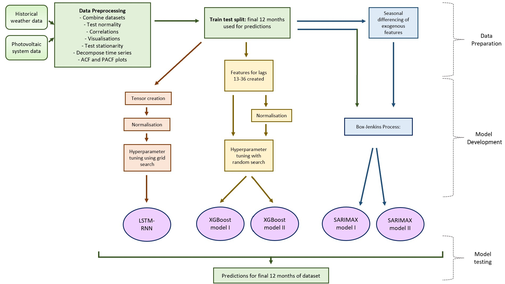Figure 1. Graphical representation of technical process.
Analyse how the PV system's power output changes with time and analyse weather features effects on power output.
The distributions for each variable were examined by the density plots and box plots shown in Figure 2. The Shapiro-Wilk test for normality was used alongside these visualisations to test if the target variable of Monthly Power Generation (kWh) had a normal distribution. The resulting p-value determined the target was not normally distributed.
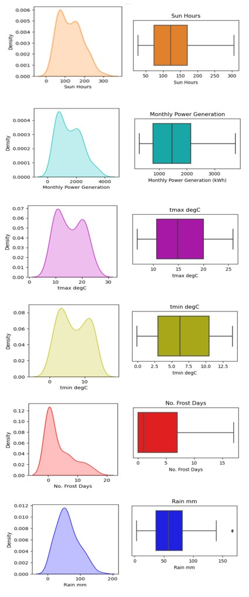Figure 2 Distributions for each variable shown in the density plots and box plots.
Therefore, Spearman’s correlation was used to test the correlations between the variables and the target, Figure 3. These relationships are plotted in Figure 4 and the Spearman’s correlations and the corresponding p-values are displayed in Table 1.
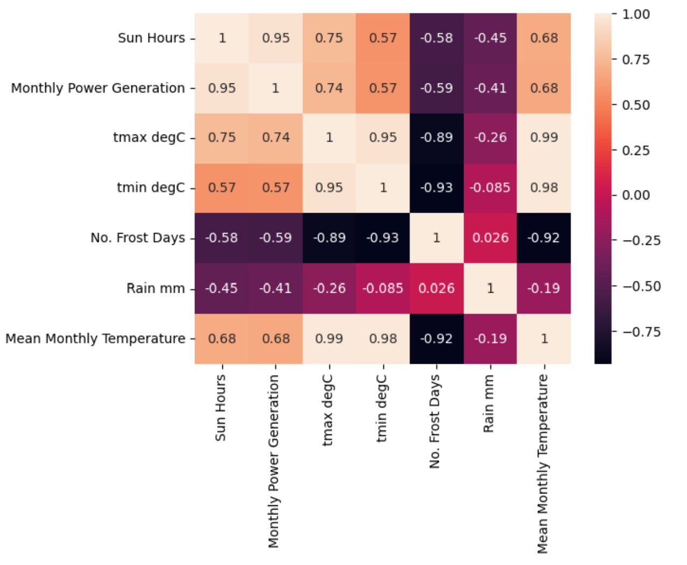Figure 3 Heatmap showing Spearman’s correlation between each variable. Included: original weather variables and created variable: Mean Monthly Temperature.
Figure 4 Plots of Monthly Power Generation (kWh) against each variable
Table 1 Values of the Spearman’s Correlation for each variable with Monthly Power Generation and the corresponding p-value.
From the correlations and the p-values, all the variables have significant correlations to the target, so are maintained for use in the models as exogenous features.
Figure 5 shows the time series of the target (Monthly Power Generation), along with it’s rolling mean and rolling standard deviation. There appears to be a seasonal pattern as well as a downward trend in this data. To establish if the features and the target are stationary, each feature was decomposed, this is shown in Figure 6. Figure 6a, c, e, g and i show the plotted time series and b, d, f, h, and j show the corresponding decomposed variables. Again, the target (6a and 6b) shows a downward trend and seasonality. The Mean Monthly Temperature (6f) may have a slight upward trend. The other exogenous features do not show any clear trends. The features Sun Hours (6d), Mean Monthly Temperature (6f) and No. Frost Days (6j) display clear seasonal components.
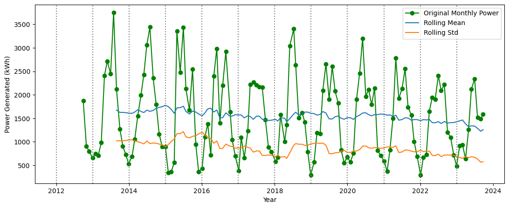Figure 5 Line plot of the original Time Series: Monthly Power Generation over time (green). With the rolling mean (blue) and the rolling standard deviation (orange)
Figure 6 Right: time series for each variable and the target variable. Left: decomposition results (trend and seasonality) corresponding to the variable on the right.
Augmented Dickey-Fuller (ADF) tests were also performed on the exogenous features, the target, the differenced target, and the seasonally differenced target. The results from these showed the exogenous features to be stationary due to trend and the target to not be stationary. They also showed that differencing the target once and seasonally differencing the target once made the target stationary.
ACF plots were also created for each exogenous feature to view autocorrelation. Figure 7a, c and d show clear correlations between the lags of the features: Sun Hours, No. Frost Days and Mean Monthly Temperature. Strong negative correlations at lag six can be seen for all these features and strong positive correlations can be seen at lag twelve. This shows the presence of a yearly season structure in the data. From Figure 7b and Figure 6h there appears to be no seasonal component or trend in the Rain mm feature.
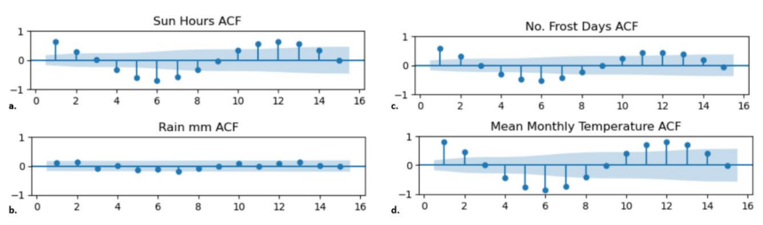Figure 7 ACF plots for each exogenous feature.
An ACF plot was also created for the detrended target to view how many data points the seasonal component repeats over. A peak outside of the blue region, greater than zero, at lag twelve means the values have statistically significant correlations to the observation twelve data points prior, indicating a yearly seasonal component.
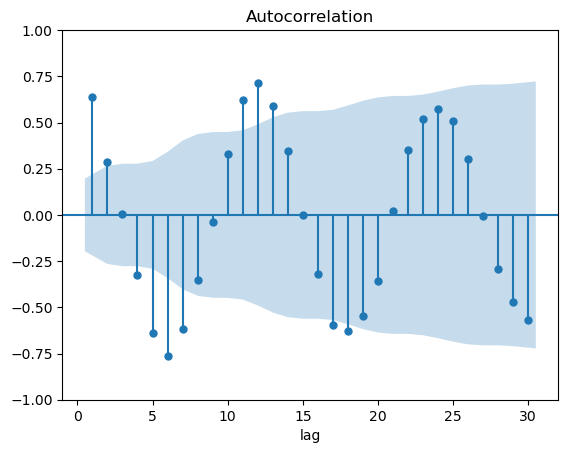Figure 8 ACF plot for detrended Monthly Power Generation.
The data was split into a training set and testing set as shown in Figure 9, with the testing set being the final 12 months of data.
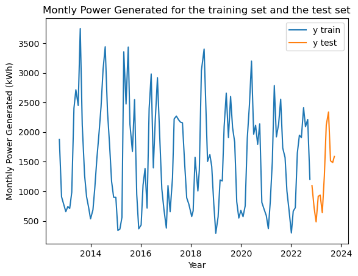Figure 9 The training (blue) and test split of the data (orange).
Incorporate target lags and weather data to build three long-term, multivariate forecasting models: statistical, machine learning and deep learning.
The three types of models were chosen to evaluate a wide range of forecasting methods. Lags of the target variable and weather data were used to train the models. This was done as previously some types of models, such as the XGB, had not been developed using previous power outputs, only using weather features. Additionally, these models are built for longer term predictions as opposed to one day-ahead forecasting. The review by Mellit et al. (2020) states few studies focus on long-term forecasting and expresses the need for its investigation.
The full methods for the development of the models can be found in the report on GitHub.
Pmdarima was used to find the orders of autoregressive and moving average parts of the SARIMAX model. A function was created to test different values of d and D which represent how many times the time series should be differenced or seasonally differenced to make it stationary, see Figure 10. The model that produced the lowest Akaike’s Information Criterion value was chosen to be the final model. The model was then evaluated using statsmodels plot_diagonstics summary functions.
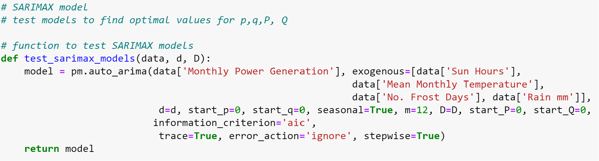Figure 10 Code for the function to test different values of d and D and find the best SARIMAX model.
A second SARIMAX model was developed to evaluate if seasonal differencing of the exogenous features altered model performance or fit. Seasonal differencing was performed on the exogenous features that showed seasonality and same process as above was followed.
Seasonally differencing the exogenous features improved model performance and the distribution of residuals. A full evaluation can be seen in the report on GitHub.
The XGBoost models were developed using the XGB library. The scikit-learn library was used for hyperparameter tuning and performance evaluation.
One XGB model was built without prior normalisation of the data and another XGB model with normalisation. Feature scales can affect the predictions of XGB, so this comparison was performed to test the performance of the XGB model with and without normalisation.
A function was created to frame the data as a supervised learning problem as to allow the lag data to be used with the XGB model, see Figure 11.
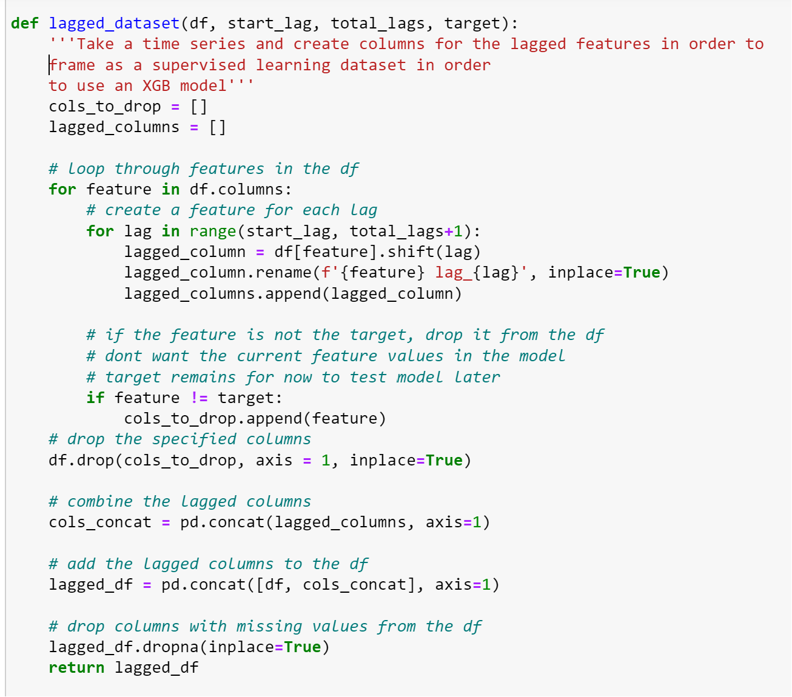Figure 11 Code for the function that takes time series data to frame as a supervised learning problem.
A Random Search approach was used for hyperparameter tuning of the XGB models, see Figure 12.
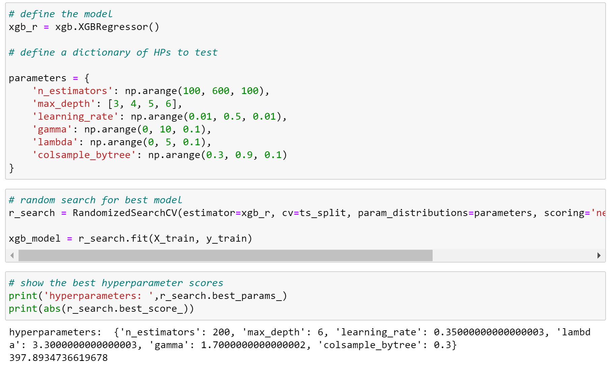Figure 12 Code for the hyperparameter tuning of the XGB model.
Normalisation improved the performance of the XGB model.
The LSTM-RNN was built using Pytorch. A function was created to display the data as tensors, see Figure 13. As feature scales can affect neural networks, functions were created to accept tensors, normalise or rescale the data, and return the data to the original tensor structure, see Figure 14.
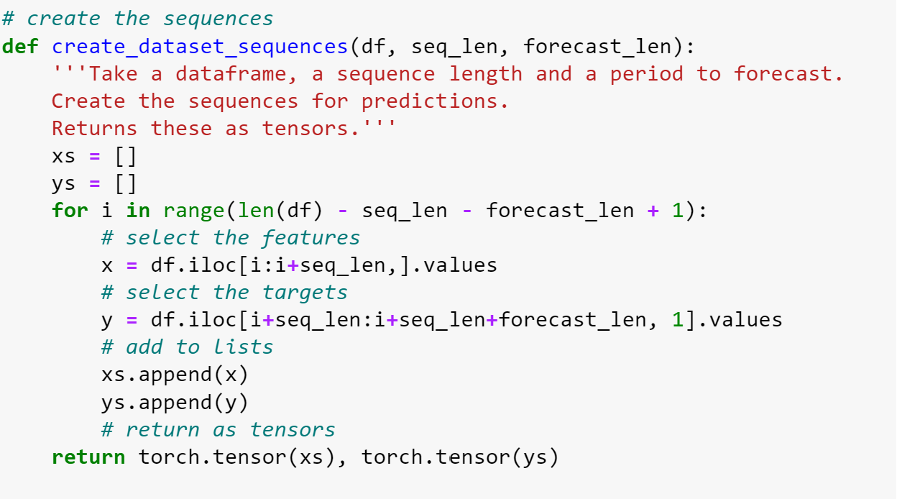Figure 13 Code for the function to create the tensors.
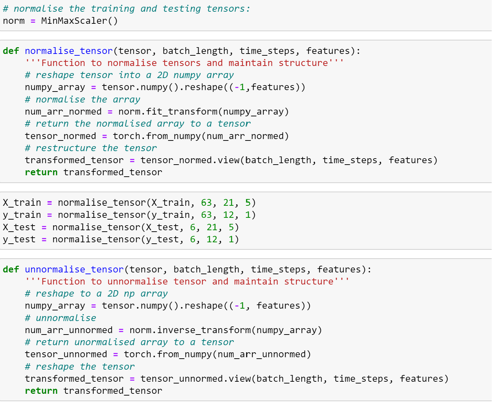Figure 14 Code for the functions to normalise and rescale the data and return to the original tensor structure.
The network was created using object-oriented programming, see Figure 15.
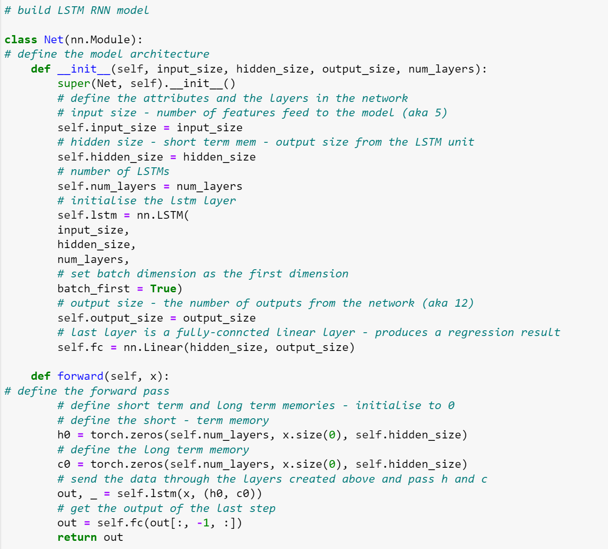Figure 15 Code building the LSTM-RNN using object-oriented programming.
NeuralNetRegressor from the skorch library and GridSearchCV from the scikit-learn library were used for hyperparameter tuning of the LSTM-RNN, see Figure 16.
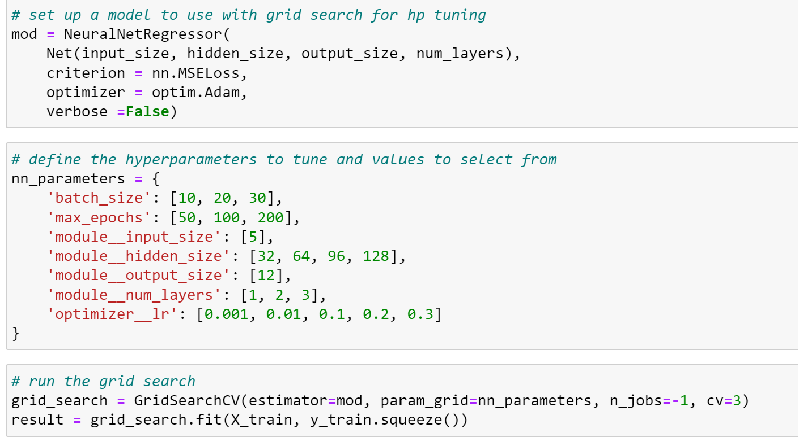Figure 16 Hyperparameter tuning of the LSTM-RNN.
Dataloaders were created to allow the data to be fed to the network. The training loop was performed with MSEloss as the criterion and Adam optimiser, Figure 17.
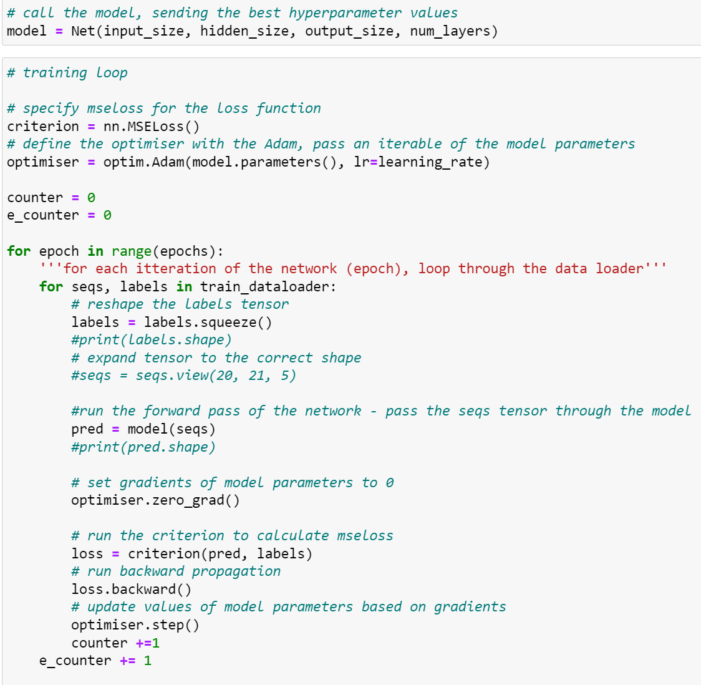Figure 17 Code for the training loop.
The evaluation loop was then run with the training, Figure 18, and testing, Figure 19, tensors.
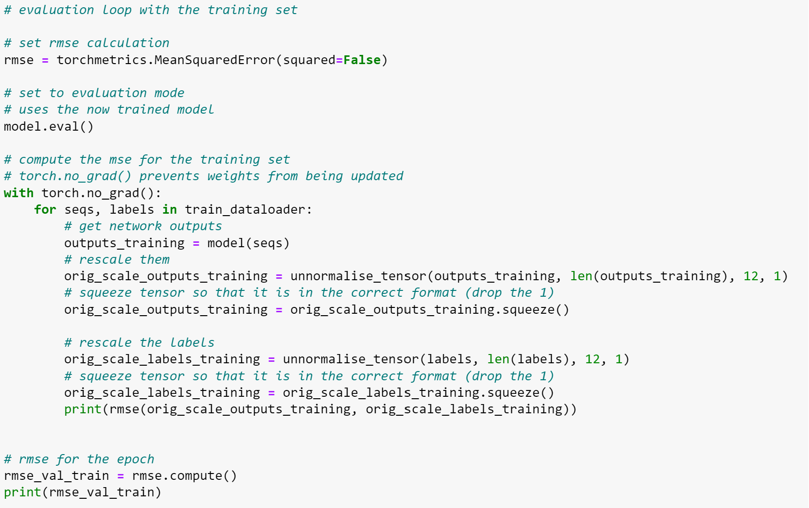Figure 18 Code for the evaluation loop with the training set.
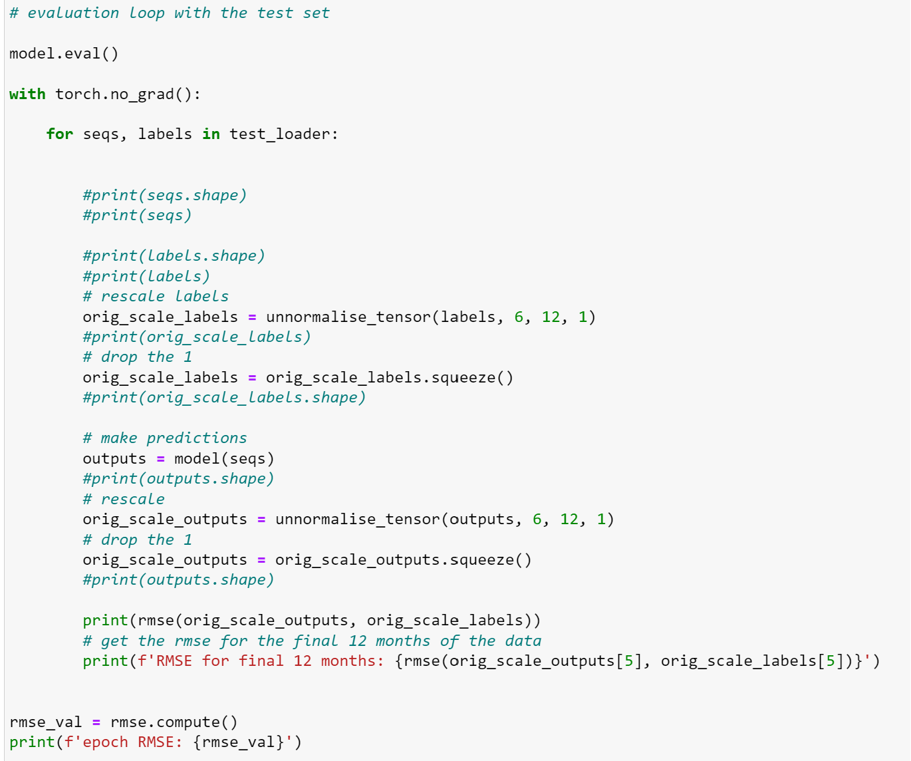Figure 19 Code for the evaluation loop with the testing set.
Use predictions for twelve months to compare results using plots and performance metrics.
The models were used to make predictions for the twelve-month period at the end of the dataset. The predictions from the models were compared using three performance metrics: RMSE, MAE and R2, the results of these are show in Table 2. The LSTM-RNN produced the best values for the RMSE and MAE and the second-best value for the R2, with the SARIMAX II model producing the best R2 result. The model predictions were also compared using visualisations. Figure 20 shows each of the predictions made by the models plotted next to the true power output values for that period. Both SARIMAX models and XGB model without normalisation have a similar pattern to their predictions that mimics the shape of the true values but overestimates the power outputs for the 04/23 – 06/23 and the 08/23 months. Normalisation appears to stop the XGB model overestimating the power outputs. This model gives close estimates of power output up to the 06/23, then starts to underestimate. The LSTM-RNN model produces a curve to estimate the power output, following the pattern of the true values less closely than the other models, but gives more accurate predictions overall. Figure 21 shows linear regression for the predicted monthly power outputs compared against the true outputs. The R2 values, Table 2, correspond to these. The more accurate the model predictions, the closer the points lie to the line. Models appear to make better predictions when the true power output is low, these low power output values correspond to the winter months. However, the winter months for the test set lie the closest in time to the end of the training set, which may be causing there more accurate predictions. Future work could use different length horizon times for a model to evaluate whether winter months or values closer to the end of the training set are predicted more accurately.
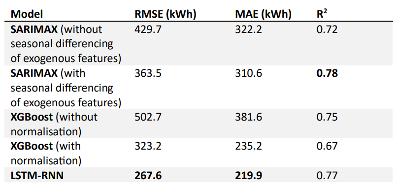Table 2 The performance metrics used for model evaluation. RMSE – root mean squared error. MAE – mean absolute error.
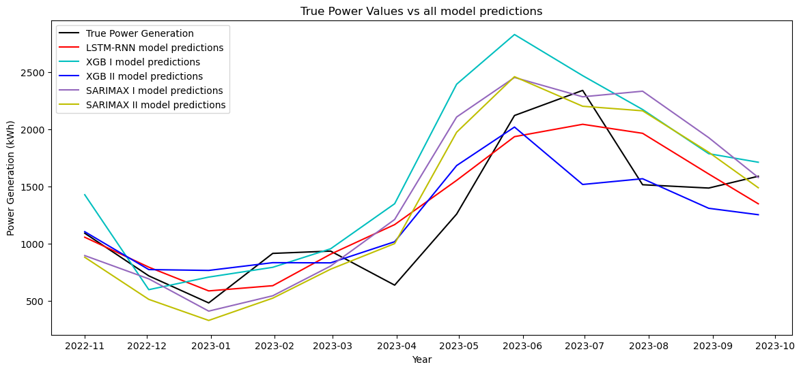Figure 20 A plot of the true power outputs for the 12-month testing dataset alongside the predictions made by each model.
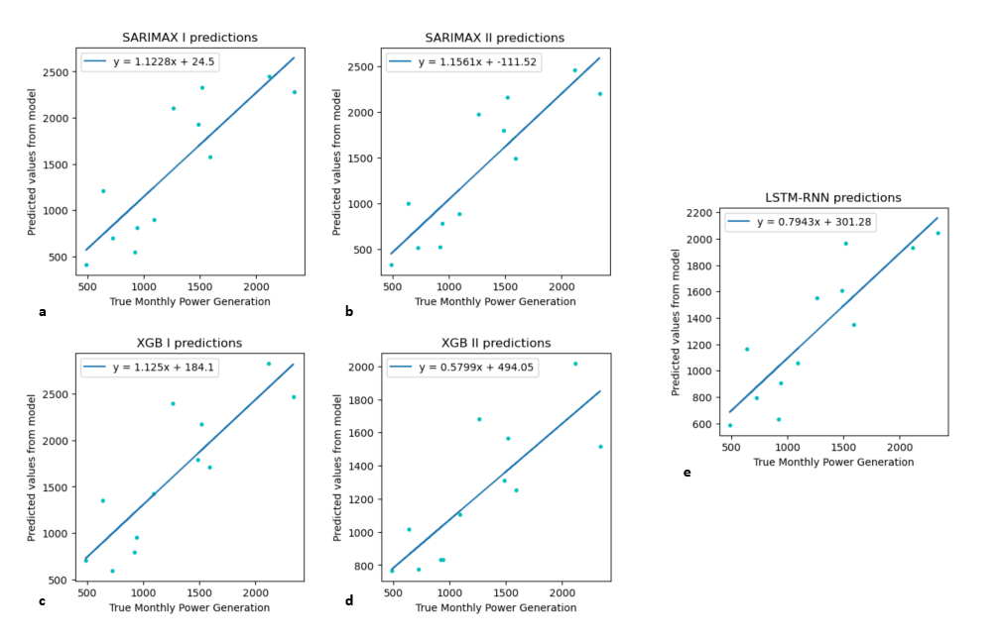Figure 21 Plots of the linear regression performed for each model’s predictions against the true power output values.
References
Mellit, A., Massi Pavan, A., Ogliari, E., Leva, S. and Lughi, V. (2020) Advanced Methods for Photovoltaic Output Power Forecasting: A Review. Applied Sciences [online]. 10 (2), p. 487. Available from: https://www.mdpi.com/2076-3417/10/2/487 [Accessed 1 November 2023].
The full report, code and data can be found on GitHub:
Code and data can be found on GitHub:
This project demonstrates my skills in data management techniques: ER models; relational databases; SQL; using Python to create, connect and populate a SQL database; NoSQL databases; MongoDB and JSON files.
The dataset contains information from different air sensors located around Bristol. It includes information on the sensors, such as name, location and coordinates as well as data on the levels of pollutants detected by the sensors.
Relational Databases
An entity-relationship model was created to model the relationships within the dataset. The Schema entity describes the units of measurement for Readings entity. The diagram shows the one-to-many relationship between the Site and Readings entities with primary keys as Site_ID and Reading_ID. Site_ID is the foreign key in the Readings entity.
ER diagram
The dataset was cropped for values earlier than 2010 and cleaned for mismatching site entries.
A python file was written to create and populate a relational database.
SQL queries were written and executed from this database:
SQL queries
A python file was also written to create SQL queries to insert the first 100 rows into the Readings entity.
NoSQL Databases
One site was taken from the relational database to be modelled to a NoSQL database. A key-value approach was used, and the data stored as a JSON file before being imported to a MongoDB database.
Python code to create JSON file
JSON file snippet
The data is organised in a denormalized model with embedded documents due to the one-to-many relationship of one site to many readings. One document contains the data for the site which includes the site id, site name and its geo location. Inside this, the document for the readings is embedded. The key readings contains an array for each reading for the site. This document was placed inside one collection called sites within the database. This approach was used over having one document for each reading and embedding the site data into each of these as this would cause much repetition of the site data. The denormalized model with embedded documents was used over the normalised model due to faster querying. As only one collection needs to be queried, results are returned faster. Also, with the normalised model, the documents for each site would contain large, potentially growing arrays of reading ids.
The database was queried to return the readings for the year 2023 sorted by the concentration of oxides of nitrogen (NOx) from highest to lowest:
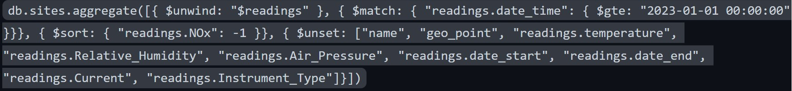MongoDB query
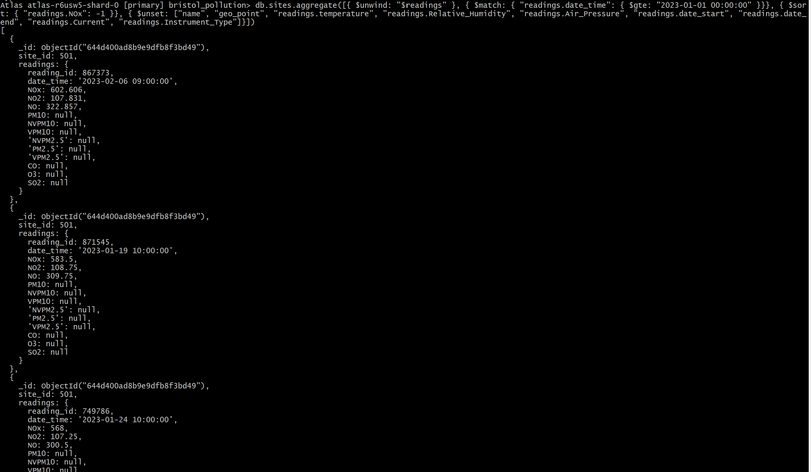Query result
The full NoSQL report can be found on GitHub.
Code and data can be found on GitHub:
The full Quarto report, code and data can be found on GitHub:
This project demonstrates my skills using R, R packages, R-studio, Quarto, data analysis with R and statistical model development with R.
The brief for this project was to create a classification tool for use by a company doing chemical analysis. They wished to know if they need to measure all variables, or if a subset of variables could achieve the same out-of-sample classification performance. Being able to use a subset of variables would mean faster processing times; but they would not wish to sacrifice classification performance for the sake of marginal speed gains.
The data contained information on different chemicals and their classes. There were 20 numerical variables and one categorical variable representing the target variable.
The report is created as a Quarto document and the exploratory data analysis and model development is written in R.
Data Preparation and Exploratory Data Analysis
The data was checked for missingness. Only 2% of the data was found to be missing, therefore only complete cases were used in EDA and model development.
The data was first split into training, test and validation sets with a split of 50% training, 25% test and 25% validation.
The training set was examined to view outliers; the distribution of the whole training set; distribution of samples between classes; the distribution of each variable for each class and descriptive statistics for each variable. Figures for these can be found in the report on the GitHub repository.
A correlation plot was created to view correlations between the variables, Figure 1.
Figure 1
Variable V14 with V13 and V17 appear to be strongly negatively correlated. Variable V17 and V15 also appear to be strongly negatively correlated. Variables V14 and V15 appear to have moderate positive correlation with each other. This means that there are possible relationships between the variables and means the dimensionality of the dataset can potentially be reduced using Principal Component Analysis (PCA).
Principal Components Analysis (PCA)
Performing parallel analysis prior to PCA showed that 5 dimensions should be retained, as these had eigenvalues greater than one. This showed how much variation is being explained more than by chance, and so how many dimensions to retain to explain this variation. Table 1 shows the linear combination of the variables for each principal component created by the PCA. It shows the results of all 20 variables captured by 5 dimensions showing that we can still capture the same information from the observations but with fewer dimensions.
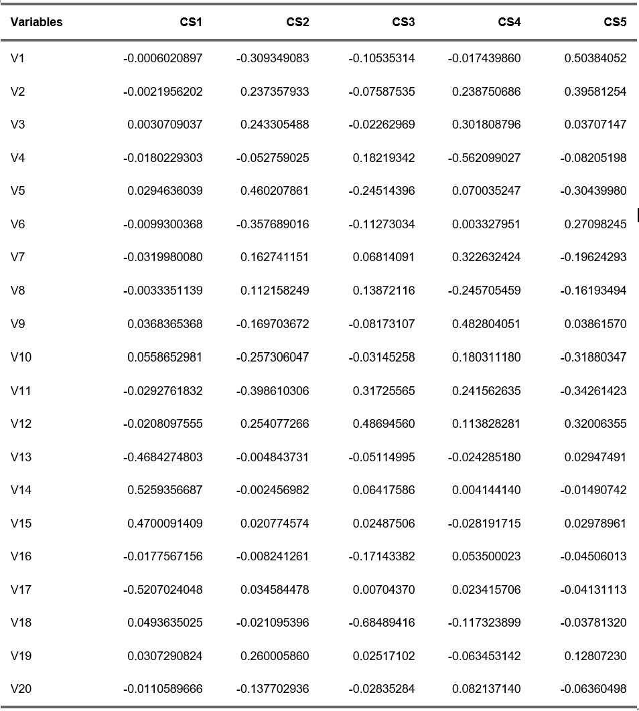Table 1
Principal component 1 is responsible for capturing the largest variation in the data. It shows a linear combination of the variables. The variables 13, 14, 15 and 17 are captured the most by principal component 1. The high negative correlation between variables 14 and 17 is captured here by showing that they have similar magnitudes in the opposite directions for their column normed scores. The high negative correlation between 17 and 15, and 13 and 14 are also captured by principal component 1, as well as the positive correlation between variables 14 and 15. These correlations were shown to be present in the original training dataset. This means that principal component 1 can represent the results covered by these variables and reduces the need for all four raw variables to be in the data. Principal component 2 captures variable 5 in one direction and variable 6 in the other direction. Principal component 3 predominantly describes variable 18, and variable 12 to a slightly lesser extent in the opposite direction. Principal component 4 captures variable 4. It also captures variables 9, 3 and 7 to a lesser extent in the opposite direction. Principal component 5 predominantly captures variable 1; also, variables 2 and 12 in the same direction and 11 and 5 in the opposite direction.
Classification Models
Five different classification models were trained and tested: Random Forest, K-Nearest Neighbours (KNN), Model Based Discriminant Analysis (MBDA), Linear Discriminant Analysis (LDA) and Quadratic Discriminant Analysis (QDA). Model performance was compared using the accuracy metric.
Accuracy was chosen as it gives an overall representation of the performance of the model. The accuracy is calculated by the total number of correct predictions over the total number of observations.
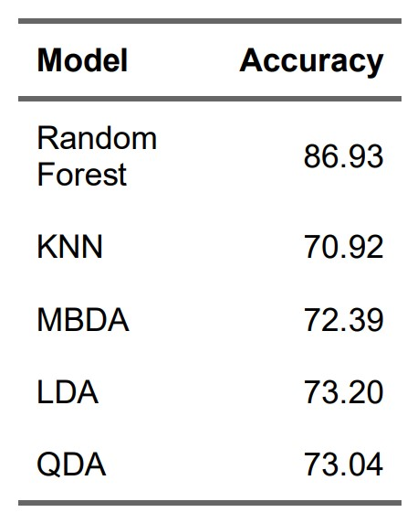Table 2
Table 4 shows the best performing model to be the Random Forest model with an accuracy of 86.93% on the in-sample test data. This model had a much higher accuracy than the other models. The model also had a greater performance on the out-of-sample validation set, with an accuracy of 89.89%. This suggests that the Random Forest model is not overfitting the training data and demonstrates how it performs on unseen data. Due to the nature of the algorithm, the Random Forest model was performed on all features of the data, without prior PCA. Therefore, for optimal classification performance, the findings from this report suggest that all variables that were present in the original dataset should be measured and included and used in the Random Forest model.
The full Quarto report, code and data can be found on GitHub:
The full report, code and data can be found on GitHub:
This project demonstrates my skills using Python, NumPy, Scipy, Pandas, Matplotlib and Seaborn for data analysis and scikit-learn for the building, testing and evaluation of machine learning multi-class classification models.
This project tests five different machine learning classification algorithms using data collected though a web survey from individuals in Mexico, Peru and Colombia (Palechor and Manotas, 2019).
The data contains information on lifestyle factors and a category of obesity level calculated from body mass index (BMI) and the standards set out by the World Health Organization (WHO) and Mexican Normativity (Palechor and Manotas, 2019). The original researchers used a SMOTE method (Chawla et al., 2002) to balance the classes from the data collected. This resulted in 77% of the data being synthetically generated. This was performed to allow the subsequent development of predictive models from this data (Palechor and Manotas, 2019).
code for the exploratory data analysis, data preparation for the models and model development is written in Python in a Jupyter notebook and the libraries: Pandas, NumPy, Matplotlib, Seaborn, Scipy, Math and Sklearn are used.
Exploratory Data Analysis:
The height and weight values show a moderate correlation of 0.46, with a p value less than 0.05, showing that this is significant. Figure 1 shows the relationship between Height and Weight. The regression line shows the linear relationship between the two variables
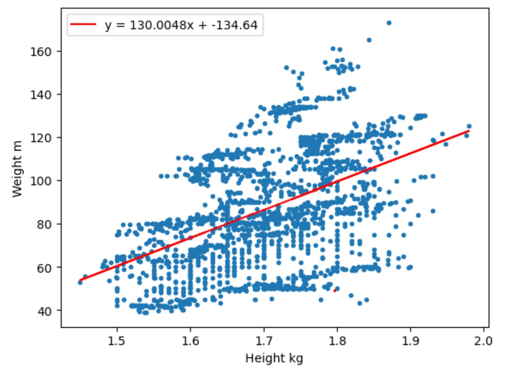Figure 1
The height and weight variables were combined to create the variable BMI (body mass index): 𝐵𝑀𝐼 = 𝑤𝑒𝑖𝑔ℎ𝑡 / ℎ𝑒𝑖𝑔ℎ𝑡 2
The boxplot in Figure 2 shows there are no outliers in the calculated BMI variable.
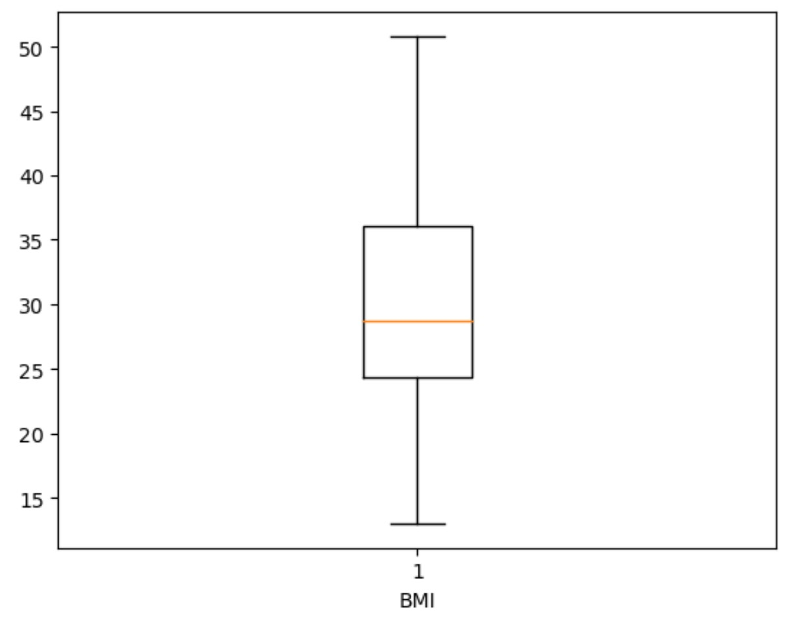Figure 2
Figure 3 shows the mean levels of physical activity for each target group. The bar chart shows that there is a decreasing trend in the levels of physical activity as the level of obesity increases.
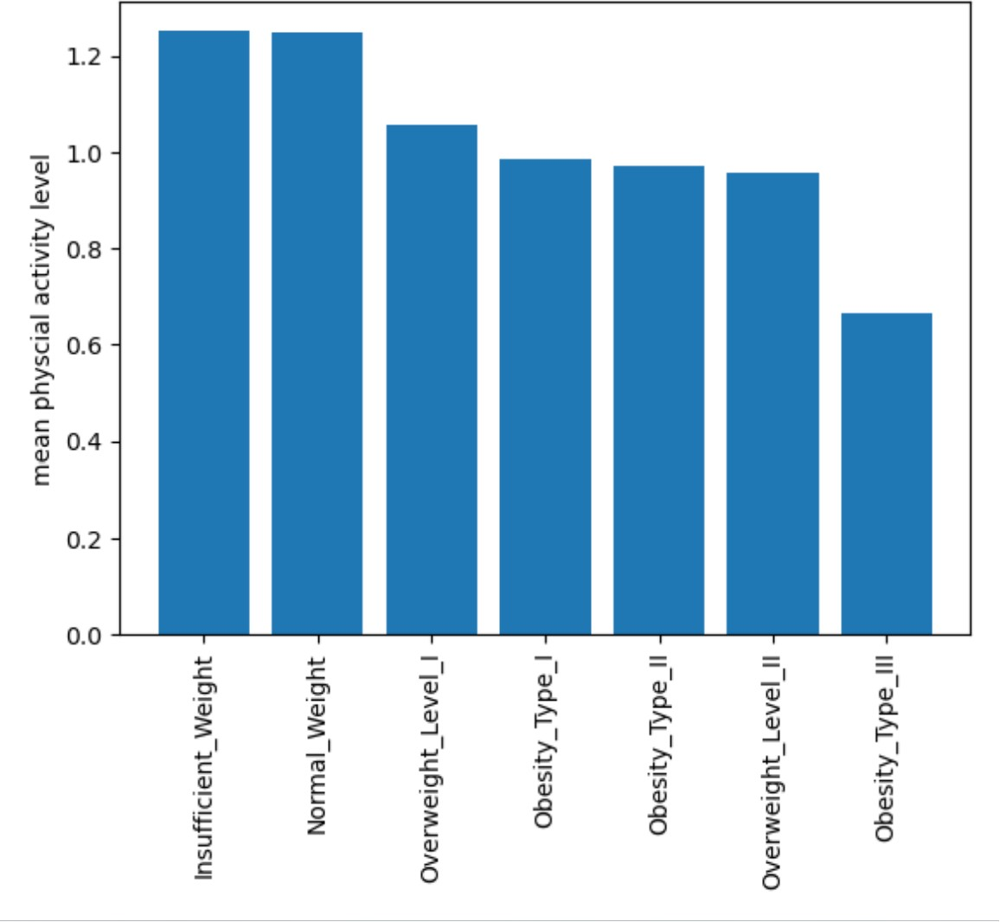Figure 3
Table 1 is a contingency table showing the frequency of the observations in the dataset with a family history of obesity for each obesity level. As the obesity level increases, there is an increase in the difference between people reporting a family history of obesity and those without a family history of obesity. The result of the chi-squared test in Table 2 shows that there is a significant association between these variables as the p-value is less than 0.05.
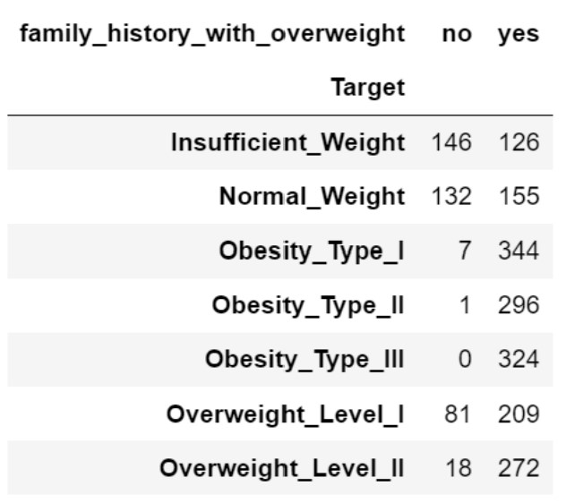Table 1
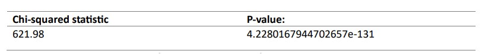Table 2
Data Preparation for the Models:
Classification Models:
Supervised learning algorithms were chosen for this problem as the goal is to classify the observations into one of seven categories. Five different algorithms were trained and tested for this classification problem. A grid search approach was used during hyperparameter tuning for the models, during which a five-fold cross validation was performed to analyse the performance of the model with each hyperparameter combination. The training set was used to train the models and the testing set was used to test and tune the hyperparameters. The validation set was not touched throughout this process to prevent data leakage. This set was saved to evaluate the performance of the best model using unseen data.
Model Evaluation
The models with the hyperparameters that give the best performances were then tested using a ten-fold cross validation approach. Figure 4 and Table 3 show a comparison of the accuracy scores of the models. The standard deviations of the accuracy scores are shown in Table 3. Many of the models performed well with an accuracy score over 78%. The adaptive boosting model performed poorly compared to the other models with an accuracy score of 45%. The best performing model was the Random Forest model with an accuracy score of 86%, followed by the Gradient Boosting model with an accuracy score of 83%.
Figure 4
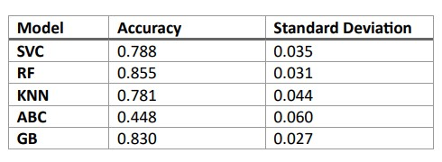Table 3
The validation set was used to show the out-of-sample performance of the final Random Forest model. Table 4 shows the accuracy, weighted F1 score and the area under curve receiver operator characteristic (AUC-ROC) for the random forest model with the validation set. These scores show that the Random Forest model performs well. These scores show that the model is not likely to be overfitting the data as the model shows similar accuracy performance on the training and validation set
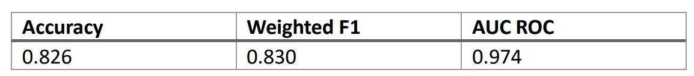Table 4
Figure 5 shows the importance of each feature is in the Random Forest model. Age appears to be the most important feature, followed by frequency of vegetables eaten (FCVC), number of main meals (NCP), Time using Technology (TUE), consumption of water daily (CH2O) and physical activity frequency (FAF). To further develop the model, feature engineering could be performed. For example, selecting features based on a feature importance threshold to be included in the model, and comparing the performance of the model with all the feature to the model with the engineered features.
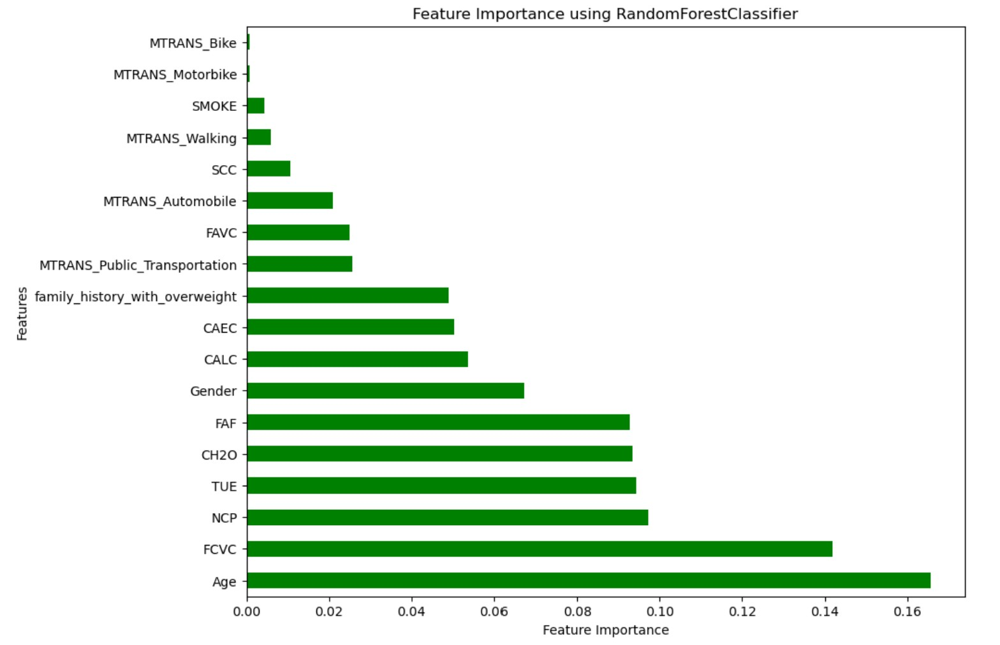Figure 5
References
Chawla, N.V., Bowyer, K.W., Hall, L.O. and Kegelmeyer, W.P. (2002) SMOTE: Synthetic Minority Over sampling Technique. Journal of Artificial Intelligence Research [online]. 16, pp. 321–357. Available from: https://www.jair.org/index.php/jair/article/view/10302 [Accessed 23 August 2023].
F.M. and Manotas, A. de la H. (2019) Dataset for estimation of obesity levels based on eating habits and physical condition in individuals from Colombia, Peru and Mexico. Data in Brief [online]. 25, p. 104344. Available from: https://www.sciencedirect.com/science/article/pii/S2352340919306985 [Accessed 23 August 2023].
The full report, code and data can be found on GitHub:
The full report, code and data can be found on GitHub:
Group project: collaborated with four other MSc Data Science students to develop a project proposal, collect data, analyse source data, develop a classification model, and report and present the findings.
This project demonstrates my skills using Python for data analysis, data pre-processing techniques such as resampling, encoding and scaling, and scikit-learn for the building, testing and evaluation of machine learning classification models.
The code and data can be found on GitHub:
This project demonstrates my skills with programming fundamentals using Python in Jupyter Notebook.
Develop a function to find the geometric mean:
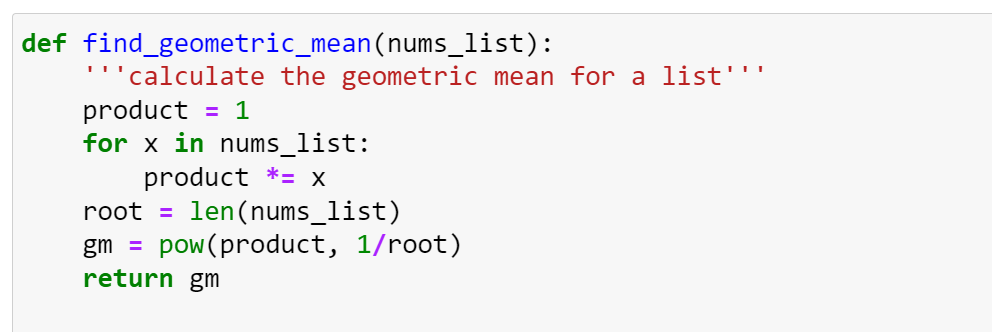Develop a function to read a single column from a CSV file:
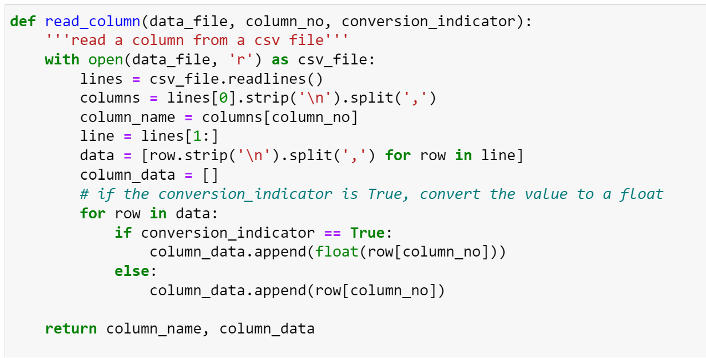Develop a function to read CSV data from a file into memory:
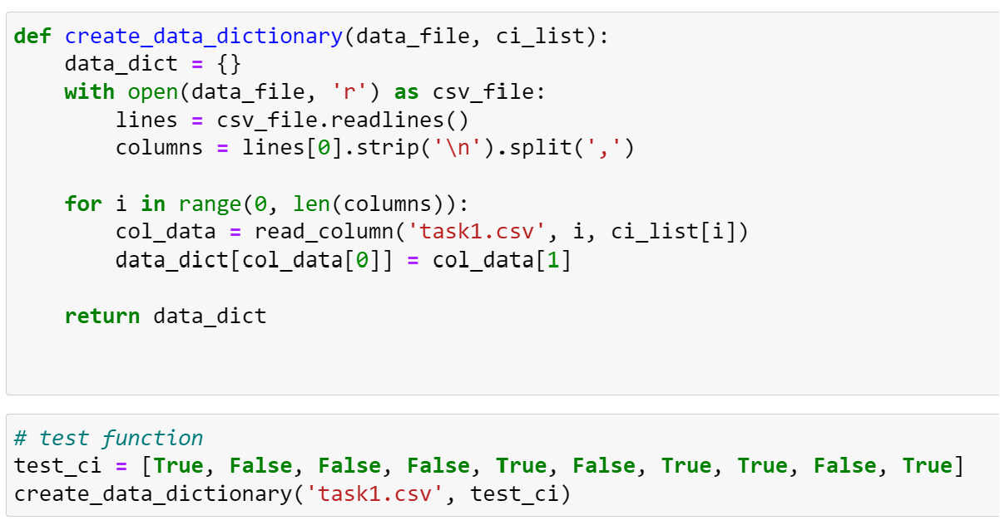Develop a function to calculate the Spearman’s Rank Correlation Coefficient for two named columns:
Develop one function to rank the values and deal with equal values.
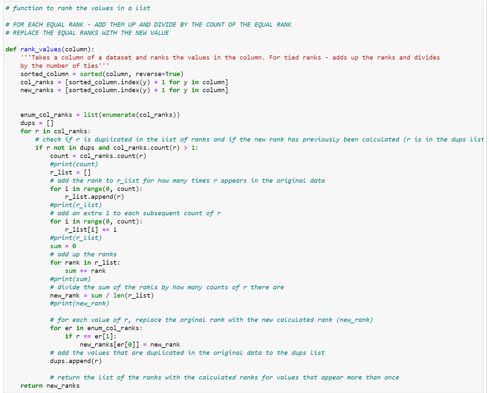Develop a function to calculate the arithmetic mean.
Develop a function to use these to calculate the Spearman’s Correlation Coefficient.
Develop a function to generate a set of Spearman’s Rank Correlation Coefficients for a given data file:
Develop a function to print a custom table:
Take four columns from a dataset, calculate the Spearman’s coefficient, and return a table to display these using a symbol to outline the table.
The code and data can be found on GitHub:
This website was coded by Alexandra Wilkinson, and is open-sourced!